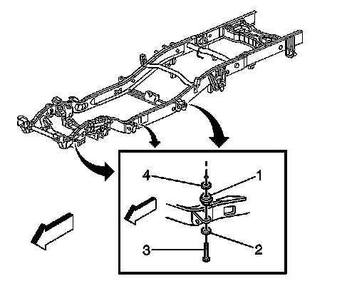

Frame Cushion or Insulator Replacement (Short Wheel Base)
Frame Cushion or Insulator Replacement (Short Wheel Base)
Removal Procedure
Important: Ensure that the vehicle is unloaded prior to body removal.
1. Remove the master cylinder. Perform the following steps:
1. Remove the nuts retaining the master cylinder to the brake booster.
2. Remove the master cylinder from the brake booster.
3. Secure the cylinder away from the booster.
2. Raise the vehicle on the hoist. Refer to Lifting and Jacking the Vehicle .
3. Remove the park brake equalizer intermediate cable. Perform the following steps:
1. Remove the nut from the park brake equalizer intermediate cable.
2. Remove the intermediate cable from the equalizer.
3. Depress the retaining tabs that secure the park brake cable to the frame.
4. Pull slightly on the cable from the mounting area in order to provide slack for body movement without binding the cable.

4. Remove the body mount bolts.
5. Properly support the body in the area that the mounts will be replaced.
Caution: When you remove the body cushions, do NOT separate the frame from the body more than is necessary. Possible personal injury and damage to multiple parts may result if you do not follow the guides outlined below:
* Intermediate steering shaft-Do not allow the shaft to extend more than 25 mm (1 in).
* Fuel tank filler hose-Do not stretch the hose excessively.
* Tail/Turn signal lamp wiring/rear lamps junction block-Leave slack in the wires.
* Park brake cable-Leave slack in the cable.
* Body ground straps-Leave slack in the wire.
Lower the chassis accordingly in order to remove the cushions (1) as necessary.
Installation Procedure
1. Install the cushions (1) as necessary and raise the chassis accordingly.
2. Perform the following procedure before installing the bolts.
1. Remove all traces of the original adhesive patch.
2. Clean the threads of the bolt with denatured alcohol or equivalent and allow to dry.
3. Apply threadlocker GM P/N 12345493 (Canadian P/N 10953488).
Notice: Refer to Fastener Notice .
3. Install the body mount bolts.
Tighten the bolts to 100 N.m (74 lb ft).
4. Install the park brake equalizer intermediate cable. Perform the following steps:
1. Pull rearward on the park brake cable to the original position.
2. Secure the cable retaining tabs to the frame.
3. Install the intermediate cable end to the equalizer.
4. Install the nut to the threaded end of the intermediate cable.
Tighten the nut to 4 N.m (31 lb in).
5. Lower the vehicle.
6. Install the master cylinder. Perform the following steps:
1. Mount the master cylinder to the brake booster.
2. Install the master cylinder mounting nuts.
Tighten the nuts to 36 N.m (27 lb ft).